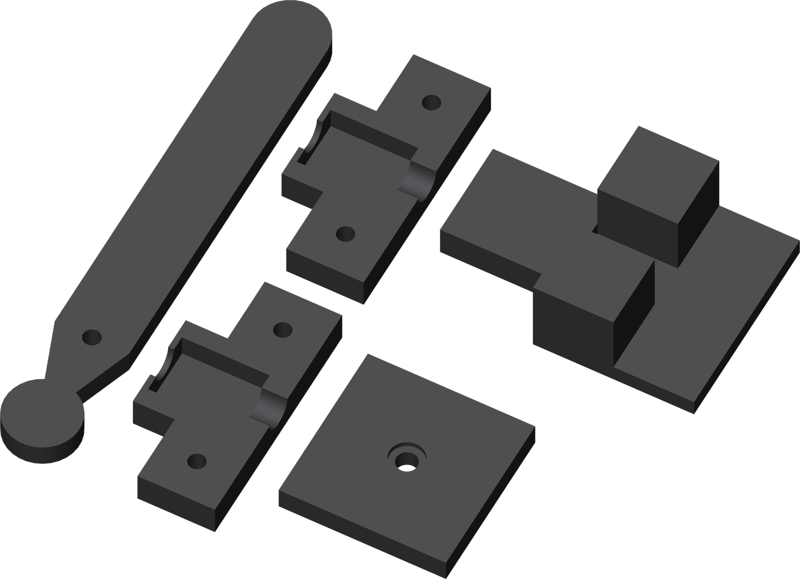

One base, one parts plate
Open the prepared PET-GF projects for H2C / Mark1 with its left 0.4 mm nozzle. The manufacturing STLs already carry their bed orientation.

| Part | Qty | Orientation |
|---|---|---|
| A Base with nest, rails and stop | 1 | Broad bottom down. |
| B Ram | 1 | Flat feet down; open fork up. |
| C Press lever | 1 | Broad flat face down. |
| D / E Lower / upper jaws | 1 each | Flat backs down; liner pockets up. |
| G Cap-support puck | 1 | Recess up. |
tube-insertion-rigid-base-h2c.3mf
tube-insertion-rigid-parts-h2c.3mf
Use the saved project orientations and support settings. Their matching .gcode.3mf archives are the prepared native slices.